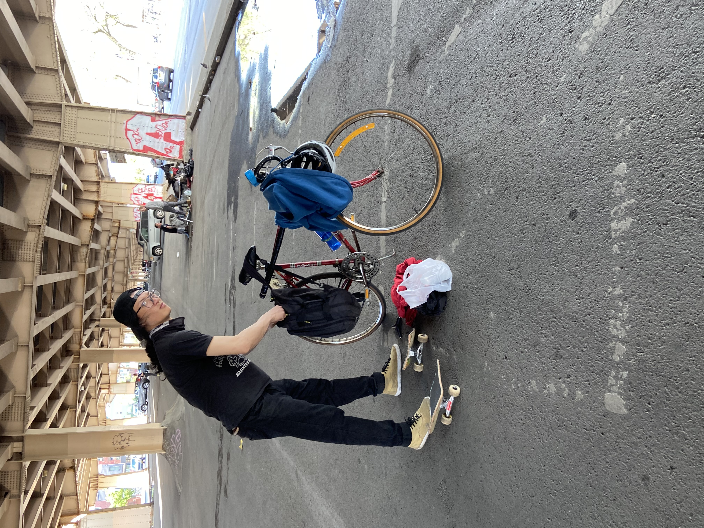

I went to the boba shop called "Siips Bubble" to order drinks, since it has been a while when I had one before the lockdown had been initiated.

Around a week ago, I made friends named Yibin and Destin at a little park in front of a laundromat near where I lived. He gave me adivce about how to ollie while moving on a skateboard, which help me a bit since I started. A few days after we met we went to Kissena corridor park, which we stumble upon homeless people trying to survive the pandemic. Under the beautiful tree, there are a cart full of food, two outdoor chairs beside it, a man-made rack for drying clothes, a mini-grill and a tent. Apart from us staying at home to prevent the spread, there are people who doesn't have a home and are trying to adapt to survive during these tough times.

My family and I are in the house hanging out on a sunday morning... Not really it's afternoon at 12, we just woke up and we're eating brunch. My step-sister gave me cut yesterday when she visited us last time; When she's dying my mom's hair to a different color. It's been a while when my mom started cooking for us more often than usual, since the fridge is usually empty and my family haven't been around the house since they're constantly working.
Last night, I was skating around the neighborhood where it's quiet and kinda nice out.. *It's kinda cold btw. It rained in the morning.*

I decided to draw kirby and have it shoot a gun. Yeah there're no more context there... I'm just bored at this point during these times. I just go along with it.
At the beginning of the quarantine, I was trying to improve on self-portraits. That way I can improve on how to draw other people, not just myself.
The first drawing was made with just only sharpie pens at the back of my apartment along with new york sunset skyline in the background. And the second drwaing is a youtuber named,"Callmecarson"; his face is funny to draw and there's a lot of faces that he makes that I love drawing.

Last thursday before class starts, there's not many people in line to purchase groceries, but when there are many people inside it gets really croweded and being 6 feet apart away from each other is impossible.
Last Sunday my friends and I went around Williamsburg, Brooklyn to skate and introduce me to one of the best skate parks and skate spots in the city. Yibin landed a trick and broke his board in half and we decided to finish it off by breaking it even more leaving just the trucks and the wheels left. So apparently after the deck snaps, he told me that it's a tradition to break the board after it snaps into pieces. It's kind of a mini-game somehow... and I just happened to join in the fun and be part of what he does.(we're under the Brooklyn Queens Expy) On the last photo on the left is Yibin and the right is Destin and if you look closely, he's wearing a gas mask filteration compared to other people who wears surgical masks out in public.(somewhere in McCarren park)
This what I do the recently on how I deal with quarantine... Nothing really change since it all started... Apart from schools, resturants, people staying 6ft. away from each other, wearing masks, gloves, staying at home... TBH I still go outside ok who cares, just do social distance and wear masks and wash your hands you'll be fine. RELAX You'll live.
Back to my main page.